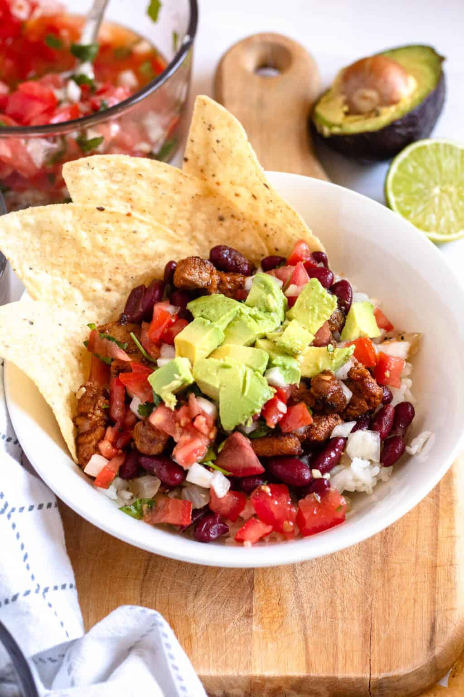

HOME
Costa Rican Recipe: Chifrijo

About Chifrijo
Chifijo is a popular Costa Rican dish that reflects the country's vibrant social scene.
the dish is typically served in bars and is enjoyed with a cold bear or glass of guaro.
This traditional dish combines white rice, red beans, chimichurri sauce, fried chicharrones, avacado
slices, and tortilla chips.
Ingredients
- White Rice
- Red Beans w/ Broth
- Chicharrones
- Chimichurri
- Avocado
- Tortilla Chips
- Lime
Steps
- Prep white rice, red beans, hot chicharrones, sliced avocado, chimichurri, cut lime, and tortilla chips.
- Place with white rice at the bottom of a bowl.
- Add beans and broth over the white rice.
- Next, add chimichurri (pico de gallo) to the bean and broth mixture.
- Scatter pieces of chicharrones
- Garnish with avocado slices, corn tortilla chips.
- Garnish with lime juice.